Tema 9: Conexión a Bases de Datos¶
Duración y criterios de evaluación
Duración estimada: 14 sesiones
Resultados de aprendizaje
- Conocer cómo se relacionan los lenguajes de programación con las bases de datos mediante APIs.
- Comprender el desfase objeto-relacional y el papel de los ORM.
- Instalar y configurar el driver JDBC para MySQL.
- Conectar una aplicación Java a una base de datos MySQL con la API JDBC.
- Ejecutar sentencias SQL (INSERT, UPDATE, DELETE, SELECT) desde Java.
- Desplegar una base de datos MySQL (y phpMyAdmin) con Docker.
- Aplicar el patrón DAO para independizar la lógica de negocio del acceso a datos.
Criterios de evaluación
- Se explica la utilidad de una API y del driver/conector para acceder a la BDD.
- Se establece una conexión correcta con
DriverManager.getConnection()(sinClass.forName). - Se realizan operaciones con
Statementy, preferentemente, conPreparedStatement. - Se procesan los resultados de una consulta con
ResultSet. - Se gestionan los recursos con
try-with-resources. - Se levantan MySQL y phpMyAdmin como contenedores Docker.
- Se estructura el acceso a datos con el patrón DAO:
DAOManager, interfaces y DAOs.
9.1 Introducción y desfase objeto-relacional¶
Los lenguajes de programación y las bases de datos se relacionan mediante APIs. Nosotros vamos a trabajar con la API JDBC (Java DataBase Connectivity) para acceder desde Java a MySQL. Nos va a permitir ejecutar sentencias SQL desde Java de forma sencilla.
El desfase objeto-relacional¶
Consiste en las diferencias entre la POO y las bases de datos relacionales:
- El lenguaje de programación (Java) es distinto del lenguaje de acceso a datos (SQL).
- En POO hay tipos de datos complejos (objetos con sus relaciones) y en la BDD relacional, datos sencillos.
- En la fase de diseño intervienen diagramas de clases (clases y objetos) y diagramas ER (tablas y relaciones).
- El modelo relacional trata con relaciones y conjuntos (base matemática); el de POO, con objetos y asociaciones.
La principal dificultad es manejar nuestras clases y pasarlas a SQL: un objeto EquipoFutbol que tiene una colección de Jugadores y cada jugador su número de teléfono se modela "fácil" en POO, pero pasarlo a SQL no es trivial y necesita mucho código.
La solución: ORM¶
Un ORM (Object Relational Mapping) mapea de forma automática nuestros objetos a tablas SQL y viceversa.
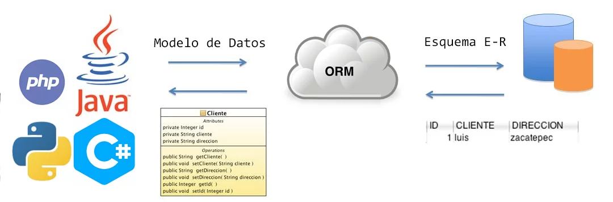
Algunos ORMs: Hibernate, ObjectDB, TopLink, CocoBase, OpenJPA...
¿Por qué empezar entonces con JDBC?
JDBC es el API "de bajo nivel" sobre el que se construyen los ORM. Entenderlo te ayuda a saber qué hace Hibernate "bajo el capó" y te permite trabajar sin él en proyectos pequeños.
9.2 Drivers (conectores)¶
Un conector o driver es un conjunto de clases encargadas de implementar las interfaces del API utilizado para acceder a la base de datos. En nuestro caso, es un fichero .jar que contiene una implementación de todas las interfaces del API JDBC que conectará con MySQL.
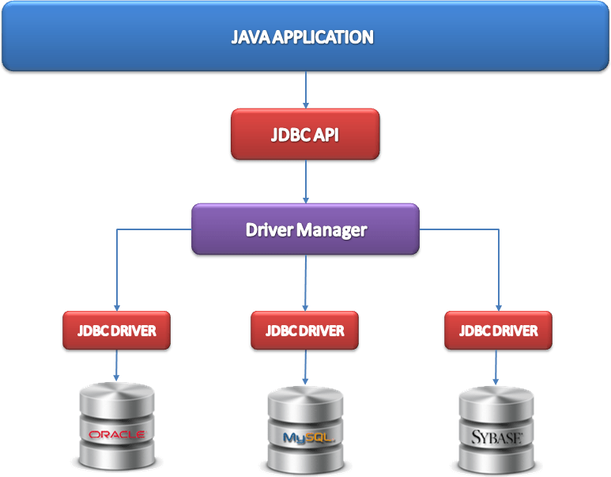
Cómo instalarlo: opción manual¶
- Descargar el MySQL Connector/J (elige la opción Independiente de la plataforma y descarga el ZIP).
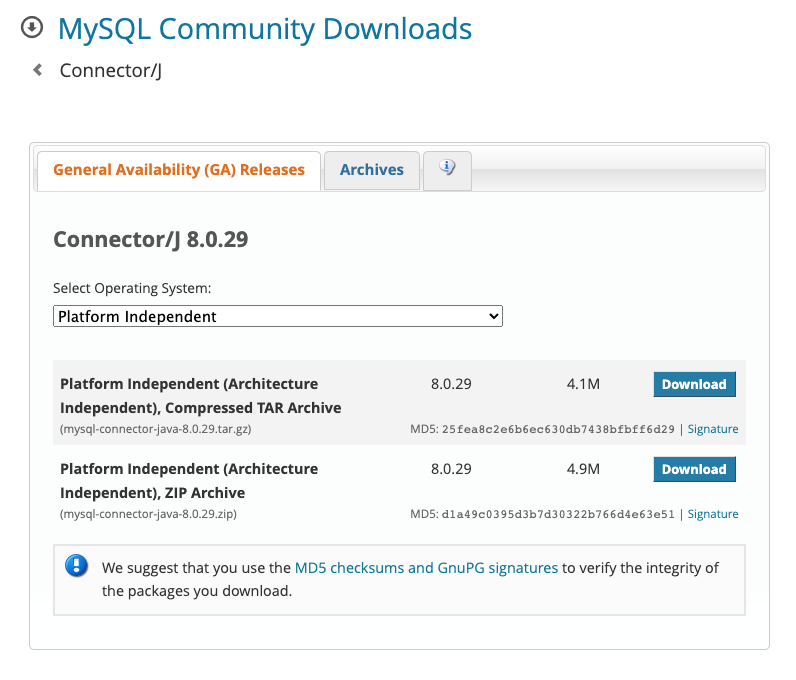
- Descomprimir el ZIP y añadir el
.jaral proyecto en Project structure → Modules → Dependencies → + → JAR or directories.
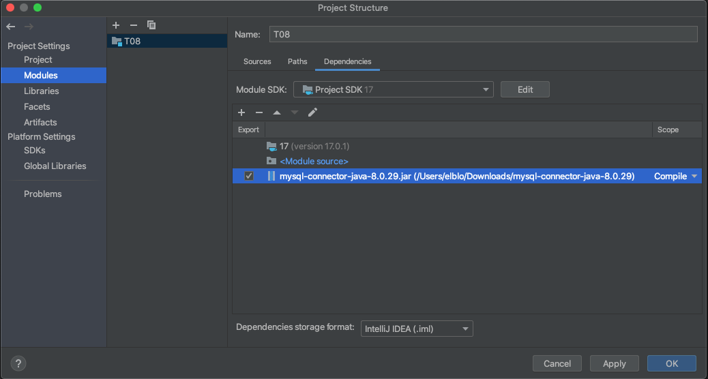
Cómo instalarlo: opción Maven (recomendada)¶
En lugar de descargar el JAR a mano, añade la dependencia en el pom.xml para que Maven la gestione automáticamente. El grupo/artefacto actual es com.mysql:mysql-connector-j (versión actual: 26.7.0):
<dependency>
<groupId>com.mysql</groupId>
<artifactId>mysql-connector-j</artifactId>
<version>26.7.0</version>
</dependency>
Ya no hace falta Class.forName (JDBC 4.0+)
Los tutoriales antiguos cargaban el driver con Class.forName("com.mysql.cj.jdbc.Driver"). Desde JDBC 4.0 (Java 6) eso es innecesario: el JAR del driver se registra solo mediante el mecanismo de ServiceLoader al llamar a getConnection(). Basta con que el JAR esté en el classpath (o la dependencia en Maven). Si tú lo tienes escrito, puedes eliminarlo.
9.3 API JDBC¶
JDBC es el API de Java para ejecutar sentencias SQL. Se basa en:
- La simplicidad y la abstracción.
- Ocultar al usuario toda la información posible sobre el acceso a la capa de datos.
- Programar las operaciones de lectura/escritura trabajando con clases de Java.
JDBC proporciona las clases e interfaces para:
- Establecer una conexión a una base de datos.
- Ejecutar una sentencia o consulta SQL.
- Procesar los resultados.
9.3.1 Establecer una conexión¶
// URL con el servidor, puerto, SGBD y nombre de la BDD
String url = "jdbc:mysql://localhost:3306/pruebabdd";
String user = "root";
String password = "";
// Establecer la conexión a la base de datos
Connection conn = DriverManager.getConnection(url, user, password);
Ejemplo clásico (código antiguo)
Antiguamente se precedía de Class.forName("com.mysql.cj.jdbc.Driver");. Hoy no es necesario (ver el aviso anterior). Este apunte lo omite por considerarlo obsoleto.
9.3.2 Ejecutar sentencias: executeUpdate¶
Mediante executeUpdate se ejecutan sentencias INSERT, UPDATE y DELETE, devolviendo el número de filas afectadas.
// Crear y ejecutar la sentencia
Statement stmt = conn.createStatement();
String sql = "INSERT INTO usuarios (nombre, edad) VALUES ('Juan López', 25)";
int rows = stmt.executeUpdate(sql);
System.out.println("Filas insertadas: " + rows);
9.3.3 Ejecutar consultas: executeQuery¶
Mediante executeQuery se ejecutan consultas, devolviendo los datos en un ResultSet.
// Crear y ejecutar la consulta
Statement stmt = conn.createStatement();
String sql = "SELECT * FROM usuarios";
ResultSet rs = stmt.executeQuery(sql);
// Procesar los resultados de la consulta (avanza fila a fila con next())
while (rs.next()) {
int id = rs.getInt("id");
String nombre = rs.getString("nombre");
int edad = rs.getInt("edad");
System.out.println(id + " | " + nombre + " | " + edad);
}
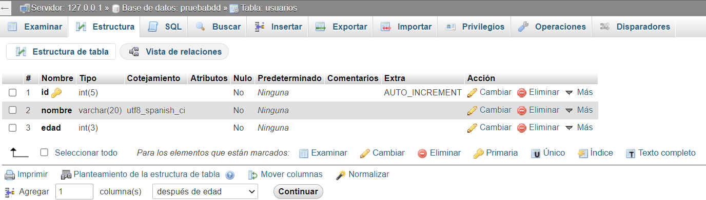
9.3.4 Ejemplo completo: Insert, Update y Delete¶
import java.sql.*;
public class EjemploInsertUpdateDelete {
public static void main(String[] args) {
String url = "jdbc:mysql://localhost:3306/pruebabdd";
String user = "root";
String password = "";
try (Connection conn = DriverManager.getConnection(url, user, password)) {
// INSERT
Statement stmt = conn.createStatement();
String insertSql = "INSERT INTO usuarios (nombre, edad) VALUES ('Ana Pérez', 30)";
int filasInsertadas = stmt.executeUpdate(insertSql);
System.out.println("Filas insertadas: " + filasInsertadas);
// UPDATE
String updateSql = "UPDATE usuarios SET edad = 31 WHERE nombre = 'Ana Pérez'";
int filasActualizadas = stmt.executeUpdate(updateSql);
System.out.println("Filas actualizadas: " + filasActualizadas);
// DELETE
String deleteSql = "DELETE FROM usuarios WHERE id = 1";
int filasBorradas = stmt.executeUpdate(deleteSql);
System.out.println("Filas borradas: " + filasBorradas);
} catch (SQLException e) {
e.printStackTrace();
}
}
}
9.3.5 Ejemplo completo: SELECT¶
import java.sql.*;
public class EjemploSelect {
public static void main(String[] args) {
String url = "jdbc:mysql://localhost:3306/pruebabdd";
String user = "root";
String password = "";
try (Connection conn = DriverManager.getConnection(url, user, password)) {
Statement stmt = conn.createStatement();
String sql = "SELECT id, nombre, edad FROM usuarios";
ResultSet rs = stmt.executeQuery(sql);
System.out.println("USUARIOS:");
while (rs.next()) {
int id = rs.getInt("id");
String nombre = rs.getString("nombre");
int edad = rs.getInt("edad");
System.out.println(id + " | " + nombre + " | " + edad);
}
} catch (SQLException e) {
e.printStackTrace();
}
}
}
Usa PreparedStatement (evita la inyección SQL)
Cuando la sentencia lleve datos variables (del usuario), NO concatene cadenas. Usa PreparedStatement, que además es más cómodo y más rápido si se repite:
String sql = "INSERT INTO usuarios (nombre, edad) VALUES (?, ?)";
try (PreparedStatement ps = conn.prepareStatement(sql)) {
ps.setString(1, nombreDelUsuario); // El "?" 1
ps.setInt(2, edadDelUsuario); // El "?" 2
int filas = ps.executeUpdate();
}
Con concatener en el Statement un nombre como Ana'; DROP TABLE usuarios;-- tu tabla... desaparece. Inyección SQL, de verdad.
9.4 Base de datos con Docker¶
Docker es una solución de virtualización ligera para correr contenedores Linux de manera muy eficiente. Se puede usar en equipos de escritorio y también desplegar en nubes como Azure, AWS... A partir de un anfitrión Linux es capaz de desplegar máquinas que comparten procesos e hilos de la máquina anfitriona.
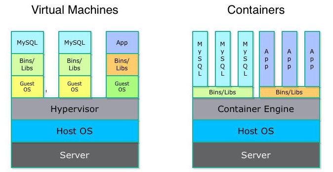
Docker en Windows
En Windows, a diferencia de Linux y Mac, la instalación y ejecución no es trivial porque no hay un kernel Linux funcionando en el sistema.

Vamos a desplegar y asociar 2 contenedores: uno con el SGBD MySQL y otro con phpmyadmin, para facilitar la interacción y visualización de los datos. Trabajaremos desde la terminal.
Paso a paso:
- Descargar las imágenes de MySQL y phpMyAdmin.
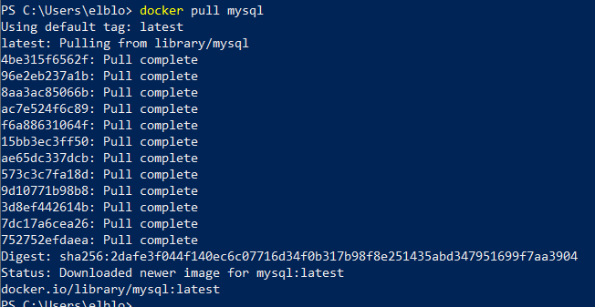
# Descargar las imágenes
$ docker pull mysql:8.4
$ docker pull phpmyadmin:latest
# Comprobar las imágenes descargadas
$ docker images
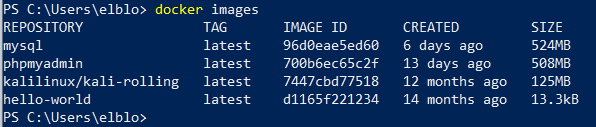
- Crear los contenedores. Opciones importantes:
-
-d/--detach: ejecutar el contenedor en background (normalmente porque tenga un servicio). --p/--publish: conectar puertos del contenedor con los del host. ---name: dar un nombre al contenedor. --e/--env: establecer variables de entorno (usuario root, contraseña, BDD inicial...).
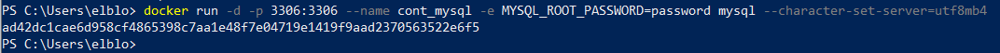
# Contenedor MySQL (root con contraseña "pass", crea la BDD pruebabdd)
$ docker run --name mysql-daw -p 3306:3306 -e MYSQL_ROOT_PASSWORD=pass \
-e MYSQL_DATABASE=pruebabdd -d mysql:8.4
# Contenedor phpMyAdmin enlazado al MySQL
$ docker run --name phpmyadmin-daw -p 8080:80 --link mysql-daw:db \
-e PMA_HOST=mysql-daw -d phpmyadmin:latest
- Comprobar el estado de los contenedores y acceder a phpMyAdmin (
http://localhost:8080, usuarioroot| contraseñapass).
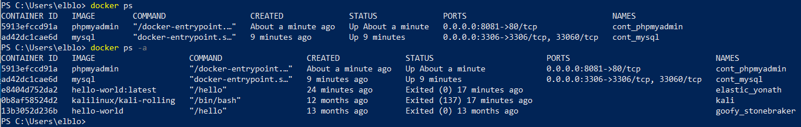
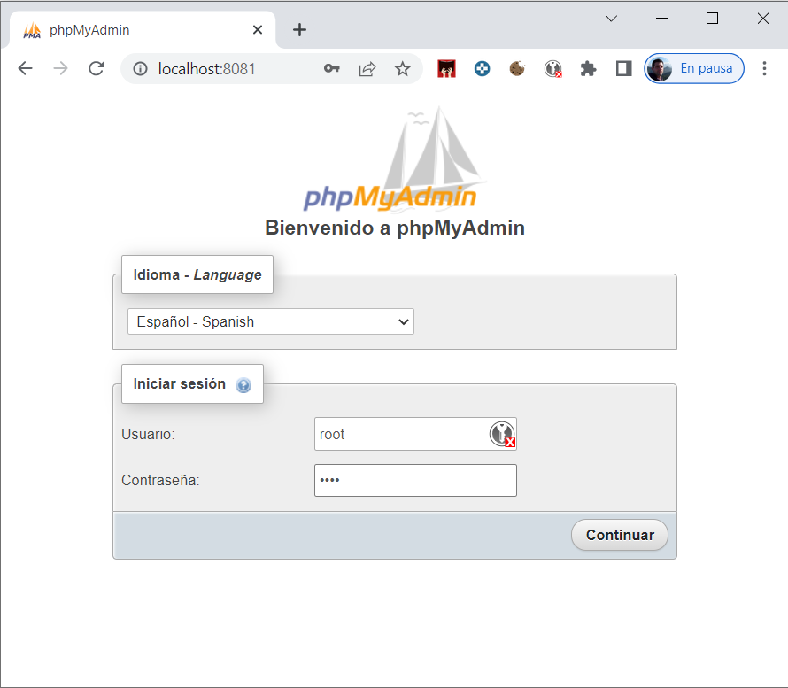
- Gestión básica de los contenedores:
# Ejecutar comandos dentro de un contenedor
$ docker exec -it mysql-daw mysql -u root -p
# Parar la ejecución de un contenedor
$ docker stop mysql-daw
# Volver a ejecutar un contenedor ya creado
$ docker start mysql-daw
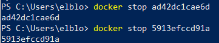
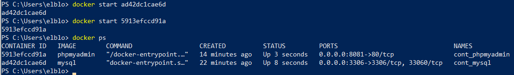
ddl y consultas a mano
Crearemos la BDD y las tablas desde phpMyAdmin (o con la pestaña SQL). Te vendrá bien esta chuleta:
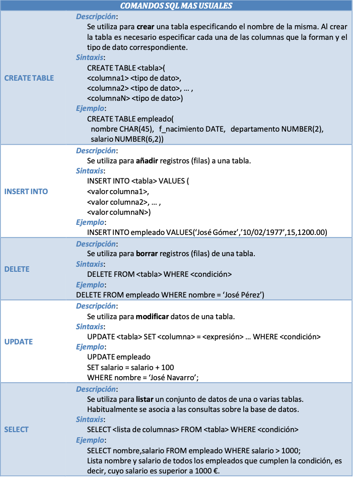
9.5 Resumen SQL rápido¶
| Sentencia | Ejemplo |
|---|---|
| Crear BDD | CREATE DATABASE pruebabdd; |
| Usar BDD | USE pruebabdd; |
| Crear tabla | CREATE TABLE usuarios (id INT AUTO_INCREMENT PRIMARY KEY, nombre VARCHAR(50), edad INT); |
| Insertar | INSERT INTO usuarios (nombre, edad) VALUES ('Ana', 30); |
| Actualizar | UPDATE usuarios SET edad = 31 WHERE nombre = 'Ana'; |
| Borrar | DELETE FROM usuarios WHERE id = 2; |
| Consultar | SELECT * FROM usuarios WHERE edad > 18 ORDER BY nombre; |
9.6 Patrón DAO¶
El patrón Data Access Object (DAO) pretende independizar la aplicación de la forma de acceder a la base de datos: fuera de las clases DAO no debe haber código que acceda al repositorio de datos.
Ventajas:
- Separar el modelo de negocio del acceso a datos.
- Tener un código limpio en la aplicación, sin mezclar con SQL.
- Posibilidad de cambiar de BDD con la misma lógica de negocio.
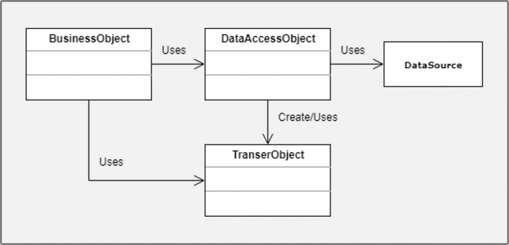
Clases que utilizaremos:
- DAO Manager: gestión de la conexión.
- Interfaces con las operaciones CRUD.
- DAOs de nuestras clases con la implementación de su correspondiente interfaz.
9.6.1 DAO Manager (patrón singleton)¶
Clase singleton (solo puede instanciarse 1 objeto) que gestiona la conexión (abrirla y cerrarla) con la BDD y a la que enviaremos las sentencias SQL.
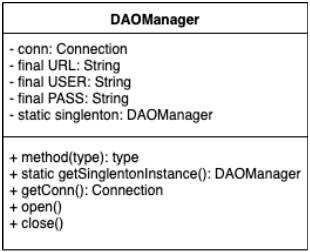
import java.sql.*;
public class DAOManager {
// Atributos
private Connection conn;
private final String URL;
private final String USER;
private final String PASS;
private static DAOManager singleton; // Atributo estático con la única instancia
// Constructor PRIVADO para que no se pueda utilizar desde el exterior
private DAOManager() {
this.URL = "jdbc:mysql://localhost:3306/pruebabdd";
this.USER = "root";
this.PASS = "pass";
}
// Método estático que devuelve la única instancia (la crea si no existe)
public static DAOManager getSingletonInstance() {
if (singleton == null) singleton = new DAOManager();
return singleton;
}
// Conectar
public Connection open() throws SQLException {
conn = DriverManager.getConnection(URL, USER, PASS);
return conn;
}
// Desconectar
public void close() throws SQLException {
conn.close();
}
}
Uso desde el main:
DAOManager dao = DAOManager.getSingletonInstance();
DAOManager dao2 = DAOManager.getSingletonInstance(); // Misma instancia
try {
dao.open();
System.out.println("Conexión establecida");
} catch (SQLException e) {
System.out.println("Error de conexión: " + e.getMessage());
}
9.6.2 Interfaces de operaciones¶
No es obligatorio, aunque sí buena práctica. Se desarrollan interfaces sobre nuestras clases con las operaciones CRUD y otras que pudiéramos necesitar. Así, si se cambia de SGBD, solo habría que implementar la interfaz sobre el DAO del nuevo SGBD, sin que se olvide ninguno de los métodos.
package ejemploBDMySQL.DAO;
import ejemploBDMySQL.modelo.Alumno;
public interface DaoAlumno {
public boolean insert(Alumno alumno, DAOManager dao);
public boolean update(Alumno alumno, DAOManager dao);
public boolean delete(Alumno alumno, DAOManager dao);
public Alumno read(String dni, DAOManager dao);
public ArrayList<Alumno> readAll(DAOManager dao);
public ArrayList<Alumno> readAlumnosByApellidos(String apellidos, DAOManager dao);
}
9.6.3 DAOs de nuestras clases¶
package ejemploBDMySQL.DAO;
import ejemploBDMySQL.modelo.Alumno;
public class DaoAlumnoSQL implements DaoAlumno {
@Override
public boolean insert(Alumno alumno, DAOManager dao) {
Statement s = null;
try {
s = dao.open().createStatement();
String sentencia = "INSERT INTO alumnos VALUES ('" + alumno.getDni() + "','"
+ alumno.getNombre() + "','" + alumno.getApellidos() + "','"
+ alumno.getFechaNacim().format(DateTimeFormatter.ofPattern("yyyy-MM-dd")) + "')";
s.executeUpdate(sentencia);
return true;
} catch (SQLException e) {
e.printStackTrace();
return false;
} finally {
try {
dao.close();
} catch (SQLException e) {
e.printStackTrace();
}
}
}
// update, delete, read, readAll, readAlumnosByApellidos...
}
El SQL de los DAOs: usa PreparedStatement
El ejemplo didáctico anterior concatena valores en el SQL. En un proyecto real hazlo siempre con PreparedStatement (con ?), para evitar la inyección SQL y manejos de comillas (fechas, apóstrofes...):
String sentencia = "INSERT INTO alumnos (dni, nombre, apellidos) VALUES (?, ?, ?)";
PreparedStatement ps = dao.open().prepareStatement(sentencia);
ps.setString(1, alumno.getDni());
ps.setString(2, alumno.getNombre());
ps.setString(3, alumno.getApellidos());
ps.executeUpdate();
9.6.4 Preparación previa¶
- No olvidar añadir el driver JDBC al proyecto (manual o Maven).
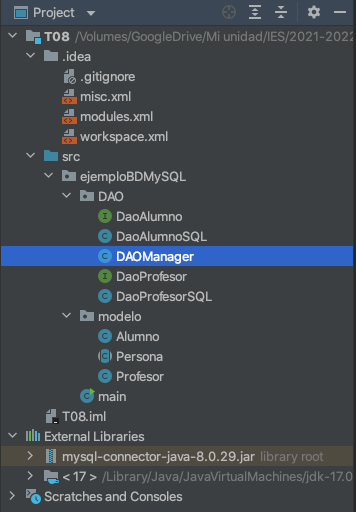
- Antes de comenzar, crear en phpMyAdmin las tablas
alumnosyprofesores, relacionándolas con las clasesAlumnoyProfesordel tema anterior.
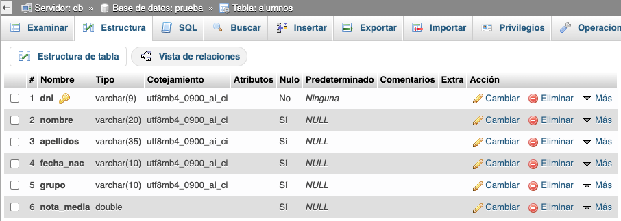
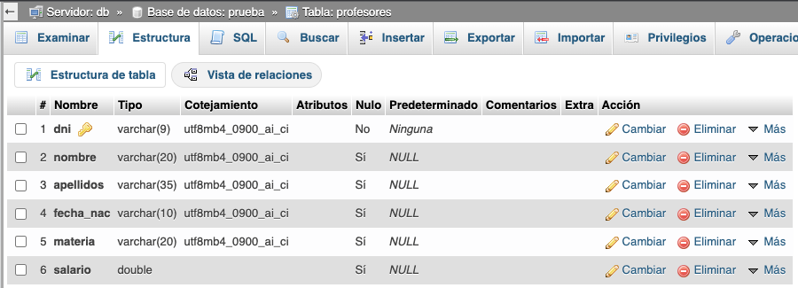
9.7 Buenas prácticas¶
- Conecta una sola vez y reutiliza la conexión (patrón singleton en el
DAOManager). - Cierra siempre conexiones, statements y resultsets. Con
try-with-resourceses automático. - Usa
PreparedStatementpara cualquier sentencia con valores variables. - Separa las capas: modelo, acceso a datos (DAO) y presentación.
- La configuración (URL, usuario, contraseña) idealmente en un fichero
propertiesexterno, no "horneado" en el código. - Para proyectos grandes, plantéate un ORM (Hibernate/JPA) sobre el patrón DAO.
- Trabaja con MySQL/phpMyAdmin en Docker para tener tu entorno de BDD reproducible en cualquier equipo.
9.8 Referencias¶
- JavaTpoint: JDBC API
- w3schools: SQL
- arquitecturajava: PreparedStatement
- Oracle: try-with-resources
- MySQL Connector/J developer guide
9.9 Actividades¶
-
Levanta con Docker los contenedores MySQL y phpMyAdmin, crea la base de datos
pruebabddy la tablausuarios(id, nombre, edad). Verifica el acceso desde phpMyAdmin. -
Escribe un programa que se conecte a
pruebabddy inserte tres usuarios nuevos. Comprueba el número de filas afectadas. -
Amplía el programa anterior para actualizar la edad de un usuario y borrar otro, mostrando las filas afectadas en cada operación.
-
Crea un programa que lea la tabla
usuariosconSELECT *y la muestre por consola conwhile (rs.next()). -
Reescribe el programa de inserción usando
PreparedStatementcon parámetros leídos por teclado (pide datos hasta escribir "fin"). Prueba a introducir el valorAna'; DROP TABLE usuarios;--y comprueba que elPreparedStatementno deja "rota" la tabla. -
Implementa el DAO Manager como singleton (constructor privado,
getSingletonInstance,openyclose). Comprueba en elmainque si obtienes dos veces la instancia es la misma. -
Crea las tablas
alumnosyprofesoresen phpMyAdmin y las clasesAlumnoyProfesordel tema anterior (ambas con DNI, nombre, apellidos y fecha de nacimiento). -
Implementa el DAO de Alumno (
DaoAlumnoSQL) con los métodosinsert,delete,readyupdate(este último lo implementas tú a partir del ejemplo). UsaPreparedStatement. -
Implementa los siguientes métodos en los DAOs de Profesor y Alumno:
readAll()yreadAlumnosByApellidos(String apellidos), y añade su correspondienteDaoProfesorSQL. -
Crea un menú en consola que, usando los DAOs, permita: insertar un alumno, listar todos, buscar por apellidos, actualizar y borrar. Toda la lógica de acceso a datos debe vivir dentro de los DAOs (ningún SQL fuera de ellos).
-
Reto: cambia la configuración de conexión (URL, usuario y contraseña) a un fichero
propertiesexterno que lea elDAOManager. -
Investiga un ORM (Hibernate o JPA) y explica públicamente cómo resolvería el desfase objeto-relacional puesto en contexto en este tema.